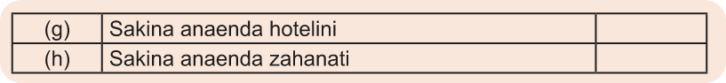

Umuhimu wa Pande Kuu za Dunia
Pande Kuu za Dunia ni muhimu sana katika maisha yetu ya kila siku.Ufuatao ni umuhimu wa kutumia Pande Kuu za Dunia;
(a)Husaidia kubaini uelekeo na mahali katika ramani na uso wa dunia.Hii inawarahisishia watumiaji kutambua mahali walipo na wanapokwenda; na kuweza kuwaelekeza watu namna ya kufika mahali fulani kiurahisi.
(b) husaidia wahandisi na wasanifu majengo katika kufanya ubunifu wa majengo, barabara na reli.Uelewa kuhusu Pande Kuu za Dunia husaidia katika kubaini uelekeo wa eneo la ujenzi kulingana na vigezo mbalimbali kama vile uelekeo wa mawio na machweo ya Jua.Pia, husaidia kubaini uelekeo wa barabara na reli kutoka sehemu moja kwenda sehemu nyingine.
(c)husaidia katika kuongoza vyombo vya usafiri.Pande Kuu za Dunia humsaidia rubani, dereva au nahodha kuchagua njia fupi na salama; na